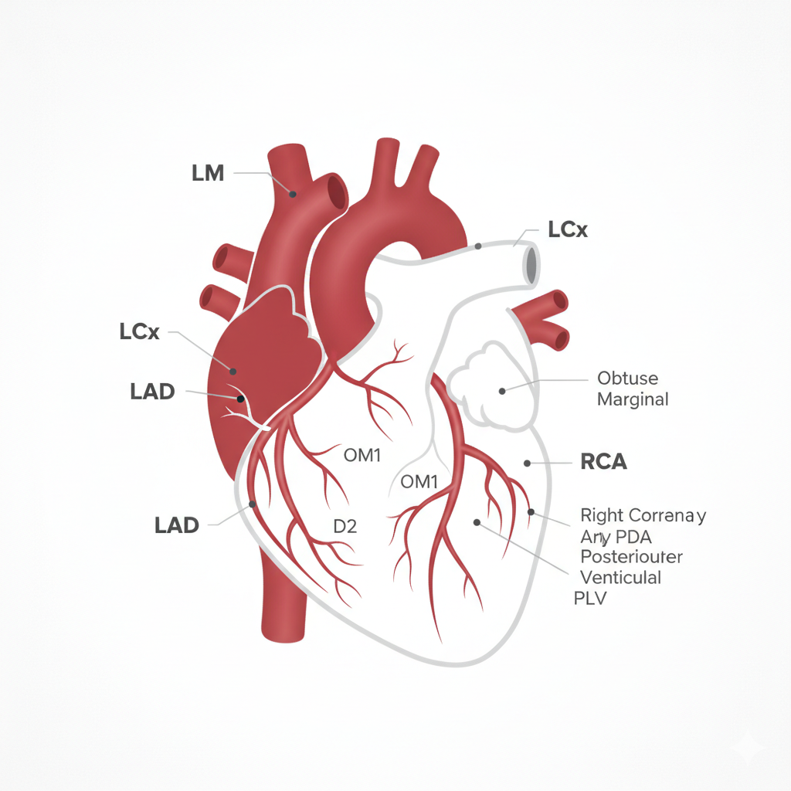

Reporte Interactivo del Árbol Coronario

Añadir Hallazgo
Arteria Afectada:
Descendente Anterior (DAI)
Circunfleja (ACx)
Coronaria Derecha (ACD)
Tronco Coronario Izquierdo (TCI)
Grado (CAD-RADS):
CAD-RADS 1 (1-24%)
CAD-RADS 2 (25-49%)
CAD-RADS 3 (50-69%)
CAD-RADS 4 (70-99%)
CAD-RADS 5 (100%)
Haz clic en la imagen para marcar la ubicación exacta.
Añadir al Reporte
Resumen de Hallazgos